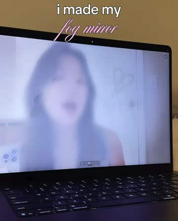
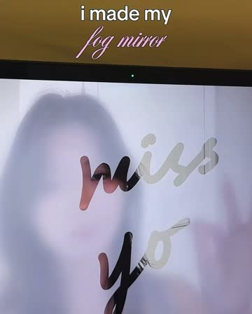
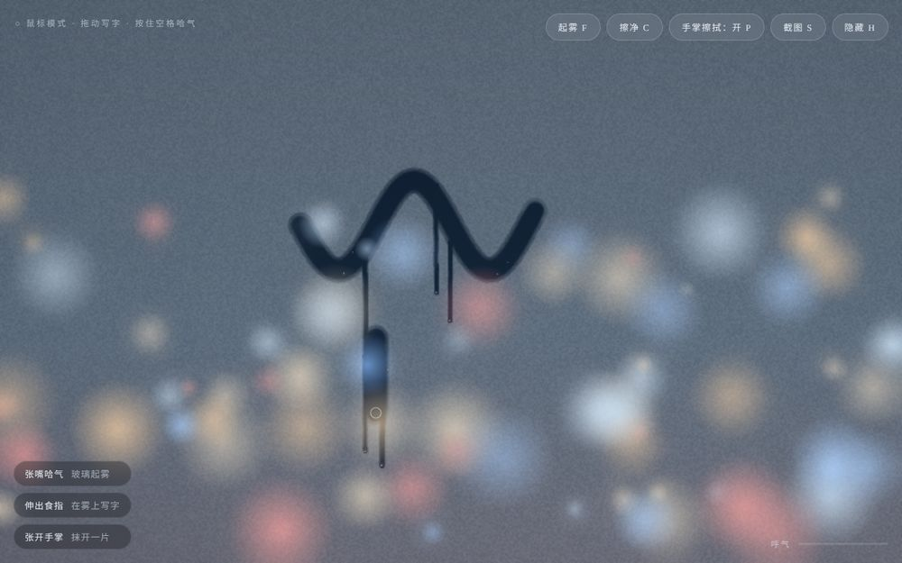
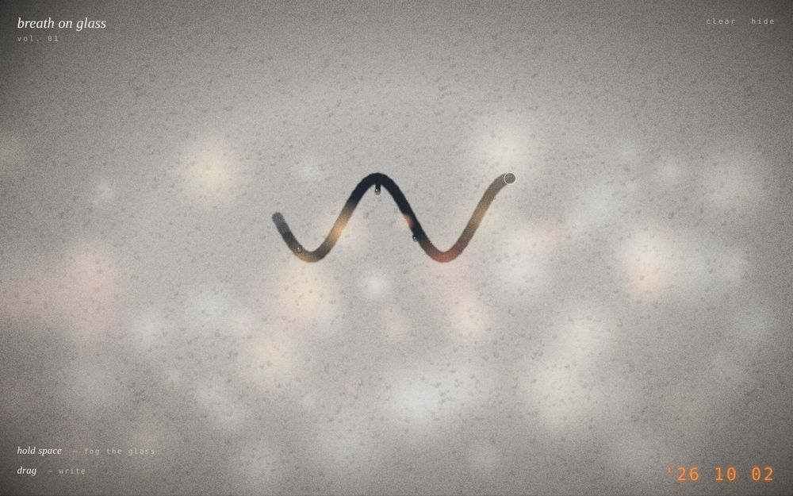
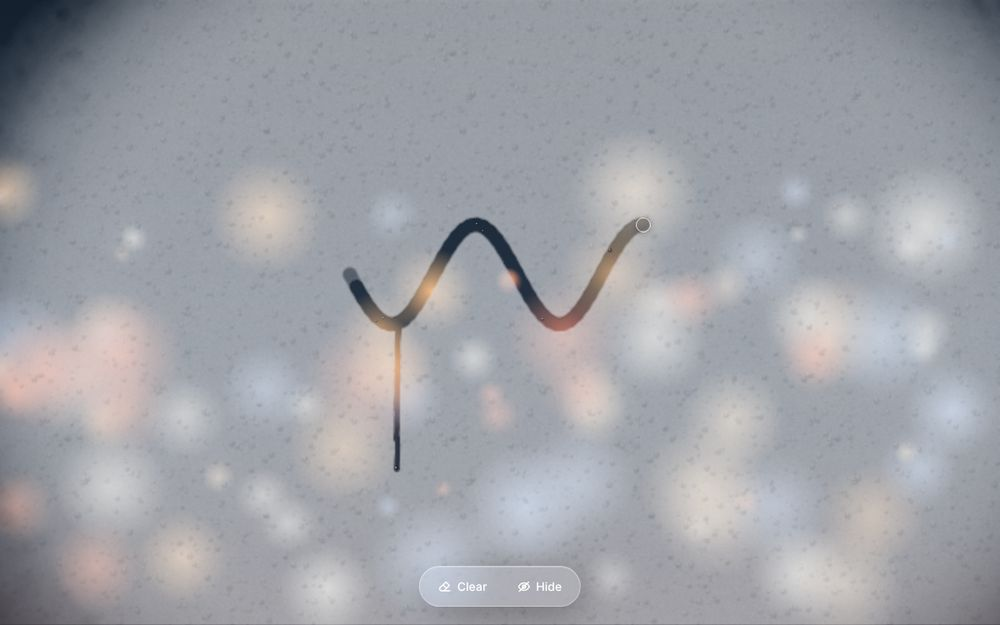
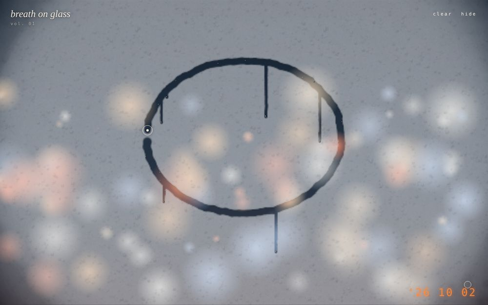
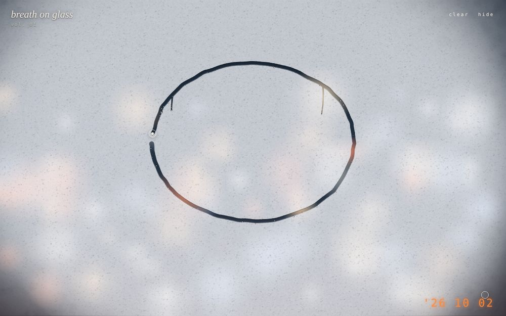
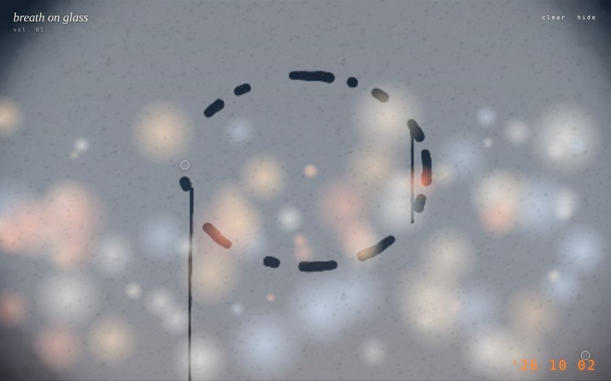
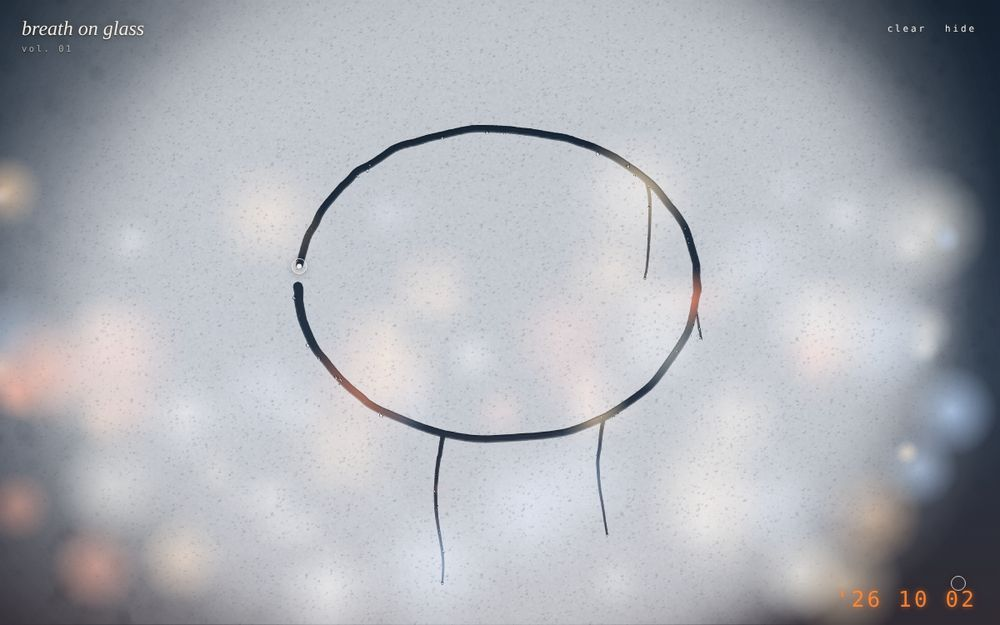
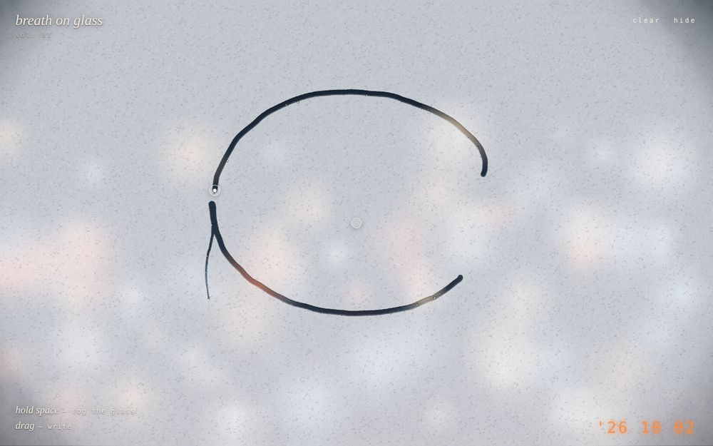

Reference
I found this video of someone breathing on their laptop screen. The screen fogs up, they write “miss you” with their finger, and then it slowly clears. I wanted to figure out how to make it.
What I wanted to copy:
- opening your mouth fogs the screen
- the fog is a blurry version of the camera image, not a flat white layer
- your finger wipes it clear
- everything fades after a while


System
The whole idea, from input to output. The filled boxes are what I built. The dashed ones are things I left out for now.
What I built
I focused on the main loop: breathe, the glass fogs, you write on it, it fades. If that part doesn't feel right, the other parts (a microphone, real glass, sending messages) don't really matter yet. For breathing I just detect an open mouth instead of real breath.
Process
The screenshots are saved versions of the prototype, all re-run with the same test input so they're comparable.
1. First version
I used MediaPipe for face and hand tracking. Mouth open adds fog, the index fingertip erases it. It worked on the first day, but the fog looked flat and grey and it didn't feel like glass.

2. Making the fog look real
I changed the fog into a blurred, brighter copy of the camera image and added tiny water droplets. Wiped edges got a small shadow and highlight, and I added drips.

3. Lag
My image on screen was moving slower than me. The page waited for the tracking every frame before showing the video. I split them up: the video plays on its own, and tracking runs in the background and only updates the fog.

4. Smoother lines
The tracker only gives about 20 positions a second, so lines looked jagged. I smoothed the positions and drew curves between them instead of straight lines.


5. Lines breaking
I couldn't finish a shape. The tracker sometimes lost my hand for a frame, and when I talked it thought I was breathing and fogged over what I was writing. I made it ignore short gaps and not fog over new writing.


6. Pointing → pinching
With a pointing finger there was no way to lift the pen, so every letter connected. I switched to pinching thumb and index: pinch to draw, let go to stop.

How the scope changed
Proposal
First version
Final
At first I wanted to make the whole thing from the video, including sending the message to someone. After the first version I cut it down to just the fog and writing. Most of my time didn't go into how the fog looks. It went into lag, broken lines, and the gesture, which I didn't expect. Switching from pointing to pinching changed it from wiping glass to something closer to writing with a pen.
Next I'd like to try using the microphone to detect real breath, and putting a piece of glass in front of the screen.